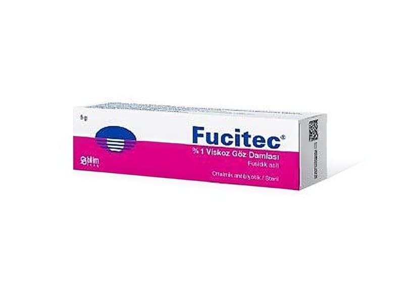

Fucitec %1 Göz Damlası, Süspansiyon, 5 g

Ne için kullanılır
KT · Bölüm 1FUCİTEC, antibakteriyel antibiyotik içeren bir viskoz göz damlasıdır. FUCİTEC, konjunktivit, göz kapağının enfeksiyonu, arpacık, korneanın enfeksiyonu, gözyaşı kesesinin enfeksiyonu ve yabancı cisimciklerin gözden uzaklaştırılması ile ilgili bakteriyel göz enfeksiyonlarında kullanılır. 5 g'lik HDPE burgulu kapaklı, lamine tüplerde sunulur.